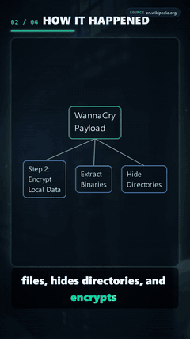
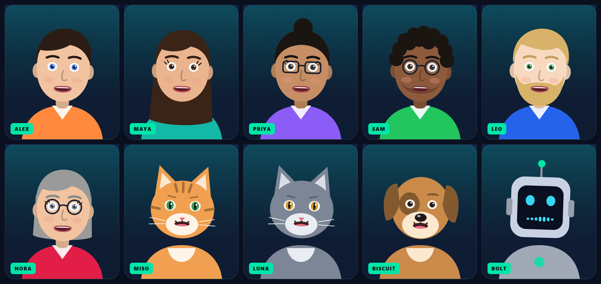
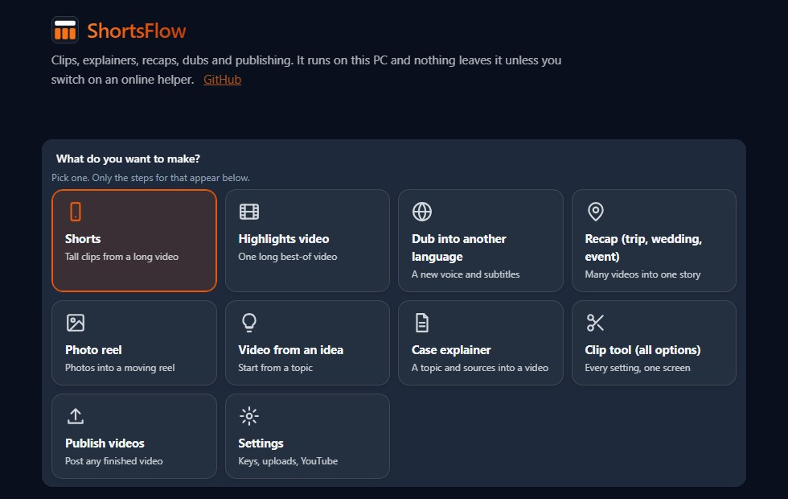
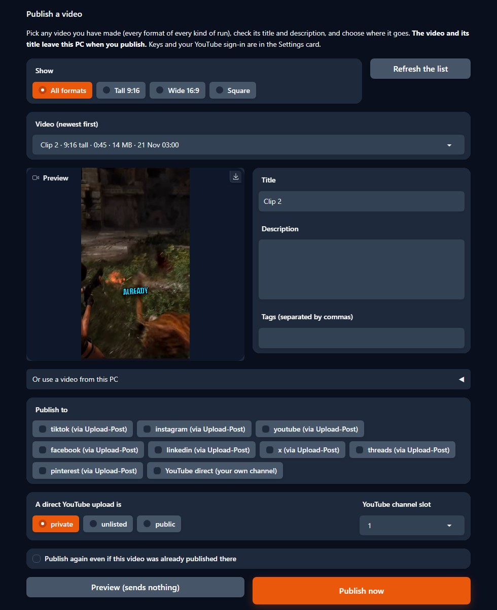

Turn long videos into Shorts. Then go further.
Upload a podcast, interview or YouTube video. ShortsFlow finds the engaging moments, follows the speaker, adds animated captions and exports vertical clips you can review and publish.
It also dubs a video into another language, makes recaps of a trip or event, and turns a web page, PDF or paper into a narrated explainer with animated diagrams, then publishes and schedules it.
Free. Open source. No watermark, no credit limits. It runs on your own computer.

Before and after
One wide podcast video in, a vertical captioned clip out.

How it works
Three steps, no account needed to clip a video.
Add a video
Paste a YouTube link or upload a file from your computer, in the browser app or from the command line.
It finds the moments
Local speech recognition reads what is said, ShortsFlow scores them (an AI model improves this if you add one), and every clip comes with the reason it was picked.
Review and export
Preview each short, change the caption style, trim it, add your logo and handle, then download the vertical video.
What it makes
Real outputs. Each one is small here; the exported videos are much sharper.



One app for all of it
A browser app that runs on your PC: a card for each thing you can make, and a place to publish what you made. Shown here in dark mode.


Choose how you want to run ShortsFlow
There is no hosted demo yet: ShortsFlow runs on your own computer or in a free Colab notebook. Pick whichever is easiest.
Windows installer
Download, run it and open ShortsFlow from your desktop. No Python or API key to install first.
Good to know: the file is small (about 2 MB) and downloads roughly 2 GB on first run (about 5 GB with an NVIDIA card, for the GPU libraries). Needs an internet connection and no admin rights. Windows may show a blue "protected your PC" box because the installer is not code-signed yet: choose More info, then Run anyway.
Mac or Linux
Needs Python 3.10 or newer and FFmpeg. One line installs it into its own folder (~/.shortsflow); nothing else on your computer is touched.
curl -fsSL https://raw.githubusercontent.com/ghost1412/shortsflow/main/install.sh | sh shortsflow doctor shortsflow clip my_video.mp4
Docker
The browser app in a container, on any system that runs Docker.
docker run -p 7860:7860 \ ghcr.io/ghost1412/shortsflow
Then open localhost:7860.
Nothing to install
Open the notebook, run the cells and use the link it prints. Free GPU on Google Colab.
What stays on your PC, and what can leave it
Clipping runs on your PC with no key. Other things can leave it, depending on what you use.
Stays on your PC when you clip: your video files, the speech recognition, the cropping, the captions and the rendering.
Fetched from the internet: a pasted YouTube link is downloaded to your PC; explainer sources are fetched from their pages.
Can leave your PC: text to the AI model you choose (Automatic tries the providers you have keys for); pictures or small video frames to Gemini for picture descriptions, smart photo reels and story drawing checks, when you have a Gemini key; prompts for generated pictures; the text to be spoken to Microsoft's online Edge voice (the default for narration) or ElevenLabs; short search phrases to Pexels; rounded GPS to OpenStreetMap for trip recaps; the finished video to Google Drive or Upload-Post when you upload or publish.
Ollama for writing and SHORTSFLOW_VISION=ollama for looking at pictures keep those two on your PC (since version 0.9.5). Full privacy list.
Honest limits: speech recognition is slow without an NVIDIA graphics card, and the quality of titles depends on the AI model you use.
And more
Explainers from sources
A web page, PDF, arXiv paper or YouTube video in; a narrated video out with diagrams and animation. Sentences with numbers or names your sources never mention are removed. Check the facts: meaning is not verified.
Recaps and photo reels
Trip, wedding or event footage into one story; photos into a reel with music.
Publish and schedule
Straight to your own YouTube channel, now or later. Other platforms go through Upload-Post, not yet tested with a live account.
30+ formats
Facts quizzes, explainers, top-5 lists, stories and more, from just an idea.
Highlights video
A long video cut to one video of its best moments, in their original order, at the length you choose.
Dubbing
Translate a video's speech and re-voice it, with a choice of tone and voice speed.
Game footage
Finds story and action moments, even silent fights, and picks the framing.
For agents
An MCP server and a REST API, so other tools can drive it.